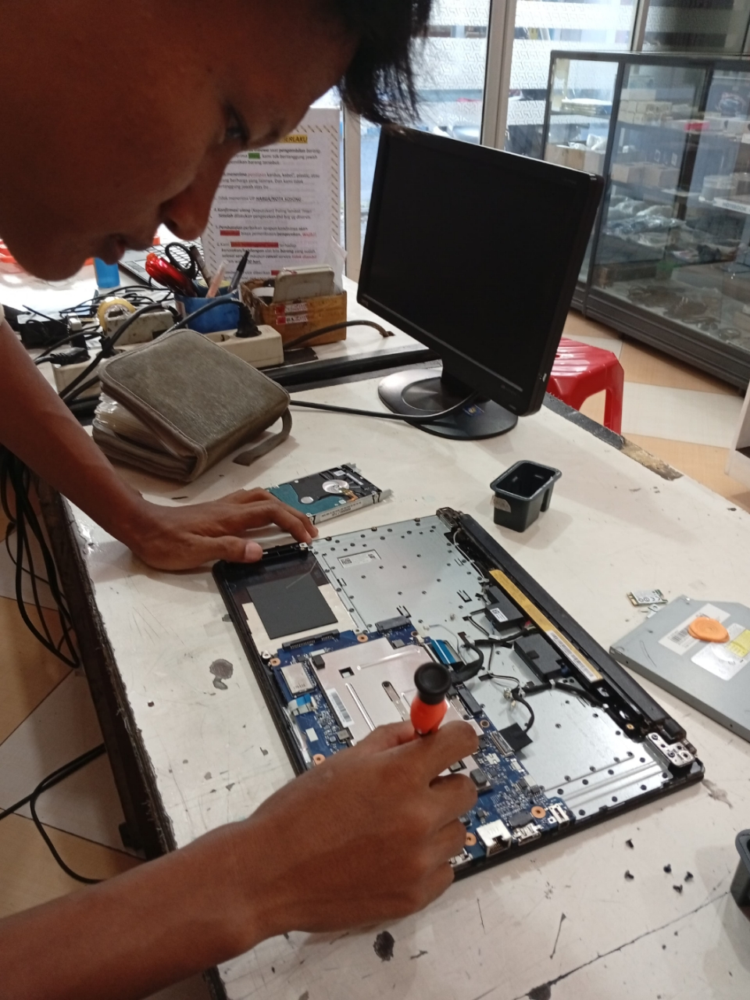
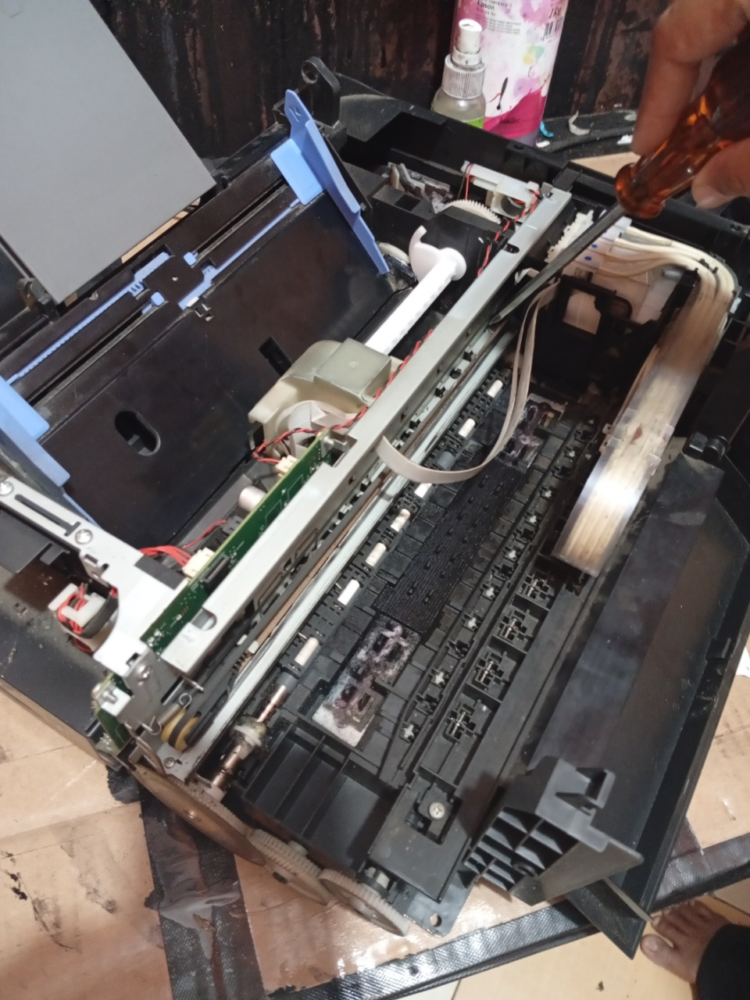
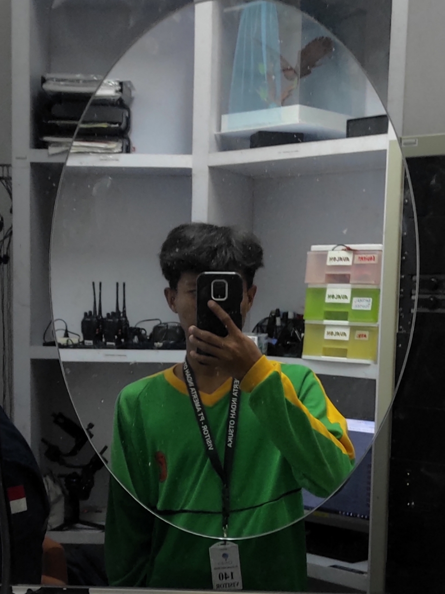

Pengalaman Magang

Service Laptop
Pengalaman service laptop di Raja Service Printer Pasuruan. Menangani berbagai masalah hardware dan software pada laptop.

Service Printer
Pengalaman service printer di Raja Service Printer Pasuruan. Memperbaiki berbagai jenis printer dan masalah yang umum terjadi.

Maintenance di PT Otsuka
Pengalaman maintenance di PT Pabrik Pocari Sweat Otsuka Pasuruan